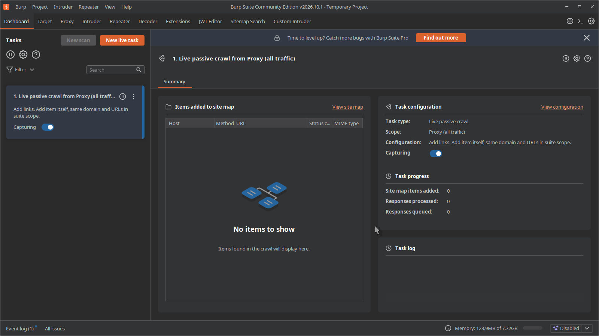
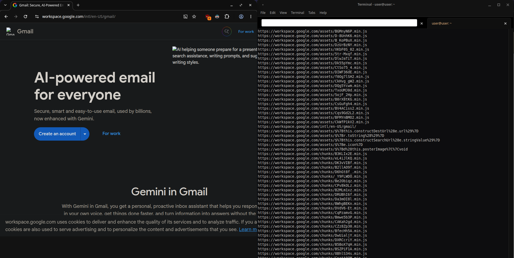
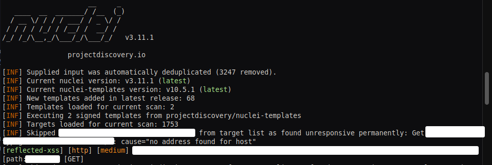

About
I'm building this page as I learn web development, both to practice my skills and to share what I've picked up along the way, including bug bounty tips and useful resources.
Disclaimer
I do not condone any illegal activitiy with anything posted here, this is strictly for educational purposes and soley for legal hacking with bug bounty.
Resources and How to Learn
If you want to learn bug bounty hunting, here are a few resources I recommend.
zseano's Bug Bounty Hunter Platform
This is where I got started, and I still recommend it first. zseano is, in my opinion, one of the best bug bounty hunters out there, and a great guy too. The platform's bugs are based on some of his real finds, and the website you hunt on, called Barker, behaves like a real-world application. As you spend time hacking on it and work through the guides and videos, you start to think and hunt like a real hacker. link: bug bounty hunter
The Odin Project
For web development, which is what I'm learning too, I recommend The Odin Project. It's completely free and has a great community. It pushes you to solve problems yourself instead of leaning on AI, which is what being a developer is really about. link: Odin Project
Setting up burp suite for bugbounty
First step you want to download and install burpsuite Link: BurpSuite

Extensions
I recommend you download and use some of my extensions from my github like the intruder, and sitemap search are the most useful ones. without these, you will have to pay burp pro to be able to use some of those features effectively. Though my intruder extension isn't as good as burp pros. my sitemap searcher is way better than the pro versions. Other extensions to install: GAP, param miner
Collecting URLs
I like to start with collecting URLs. So i will first try to crawl the target and gather URLs, and also gather passive archived URLs using waymore or gau. recently i started using urlfinder. You want to spend a good amount of time doing this. collect as many URLs as possible.
Tuning
its important when running tools that you use headers like a user agent, and try to make your requests as realistic as possible. use Accept headers and cookies if you can. this will help with coverage. also never go above a request per second limit of 3-5 in my personal findings, i have found going above this range gets you blocked and worse results. becareful when using katana with headers like gzip it can prevent it from crawling so make sure you remove those headers.
Commands i use
Here are the commands i use to collect my URLs.
Katana - Web Crawling.
waymore - passive URLs.
Going Deeper - Authenticated browser crawling
Save this as: katana-chrome in /usr/bin/
You should see something like this returned, copy the websocket address you will need it. Also make sure you login to your bug bounty target at this point. in the browser that pops up.
All that is left to do now is use the websocket address using the -cwu tag
What you should see is your browser pop up and start crawling the targeted domain. In this case its google, google has there own VRP so it was safe to use it as an example.
The point of this is to first login with your chrome browser. then use the websocket to crawled authenticated. Play around with some of the tags in katana to figure what works best for you! i find using -pls domcontentloaded works good.

Why
You might be wondering why? well, being authenticated lets us access areas of a website, Including javascript files. That we are not able to normally access, had we not been logged in. so being authenticated lets us crawl the website and harvest, more URLs and more javascript files.
Input validation
Now that we have a lot of URLs what to do now? well we can test each URL for input validation. Bug types like XSS, SSRF, SSTI, CSTI, SQLi etc can be automated. It's important to note that automation doesn't find all injection bugs, there are many edge cases where the type of payload you input won't work. having an understanding of waf will also help you for example if you sprayed the basic alert(1) tag into each field. you will likely get hit by their waf and your entire run gets killed. Or you might use excessive rate limits and your run is killed again.
When testing for input validation bugs its very important to understand what it is your doing. Simply spraying payloads won't work as well as you expect. you likely have tried this and hit a dead end and not found much. I'm here to show you how you can find stuff and relatively simply. For the sake of my findings we will focus on using a simple nuclei template reflected xss template. this template is nice because it uses a simple payload that is random and doesn't hit waf even on hardened targets.
The above is what the payload is using pretty much, but it auto updates the number inside of the <> so it acts as canary across each URL which is nice. You might be thinking or have read guides on the internet where they tell you okay we need to use gf xss and or sort by parameters right? well again, this is wrong because XSS in most of my findings have been from the path themselves and guess what? nuclei's reflected xss also targets the path.
Input validation flow
Once we have our huge list of URLs using the katana commands above should minimize duplicated paths from SPAs and dynamic loaded content, its not perfect. But you will likely have millions of URLs at this point if you mass scanned large target. You cannot just load 10B URLs into nuclei it won't load and it will crash. You need to split the URLs into chunks, so it loads in around 2-5K urls at a time i use this script for it.
I recommend saving this in /usr/local/bin/chunk_splitter and chmod +x it. This should then be globally accessible to you where ever you are in your terminal.
Next we need to itterate over each chunk one by one and test them. it's important to remember what i said, we must go slow, going fast and getting hit by waf is the last thing you want to happen during input testing, slow steady and correct injection is the way forward.
Finding a bug
Now its time to run the following command, make sure you split your files and go to that directory, then run the following command make sure you have nuclei installed and its templates. This might take a long time, so if you have a VPS this will be better, and use screen or something.
After leaving this run for a couple hours i got a hit. And was able to confirm RXSS on the path. If you would have sorted URLs for only parameters you would have missed this.
